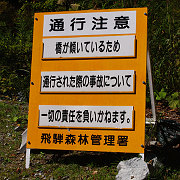

老後2000万円問題と消費節約、かつてサイレントテロと呼ばれた思想
まことに小さな国が、衰退期を迎えようとしている
封建の世から目覚めたばかりの日本が、登って行けばやがてはそこに手が届くと思い登って行った先の近代国家や列強というものを「坂の上の雲」に例えたのが、司馬遼太郎の長編歴史小説「坂の上の雲」。その小説の書き出しは『まことに小さな国が、開花期をむかえようとしている』である。
これに対して、現在の日本を『まことに小さな国が、衰退期を迎えようとしている』と皮肉を込めて表現した劇作家平田オリザ。その著書「下り坂をそろそろと下る」(2016年刊)では、日本人に対して次のように自覚を求めている。
- 日本は、もはや工業立国ではない
- もはやこの国は成長せず、長い後退戦を戦っていかねばならない
- 日本という国は、アジア唯一の先進国ではない
経済誌週刊ダイヤモンド2006年11月9日号では、線香花火の“散り菊”となる東京五輪・大阪万博から数十年後の国の姿を次のように予測している。

人口減少で郊外を結んでいた鉄道路線が廃線となり、自動車を使おうにも郊外道路は補修されず荒れるに任され、まともに車が走れるような状況ではなくなる。
頻繁にトンネル崩落や落橋のニュースが流れるが、そんなことは日常茶飯事で誰も気にしなくなる。
湾岸地区には人が住まなくなった廃墟のタワーマンションが林立し、うなぎのぼりの水道料金を取る割には断水しまくり、挙句の果てに下水道が崩落して水が流せなくなる始末。
予算不足で警官が激減した結果、もはや夜間に出歩くなど危険すぎて考えることも出来ない。
インフラがかろうじて維持された場所に引っ越そうと思っても、どこも不動産価格の暴落と買い手の不在で引っ越すことも出来ない。
政府やマスコミは常に楽観的な将来推計を提示しているが、多くの人は日本という国に明るい未来はなさそうだと、薄々感じている。
週刊ダイヤモンドの記事が書かれた2006年から18年経過した2024年現在、想定されているより早く・広範囲に日本は衰退しているのは誰しも感じていることではないだろうか。
節約・貯蓄はいつの時代も
氷河期世代が社会に出た後の2005年ごろ、それまでの「日本人的な節約」という価値観に加え、「社会に反旗を翻すための節約」であるサイレント・テロという言葉が生み出された。
そして、日本が先進国だった頃の最後の蓄えを吐き出し、線香花火の“散り菊” 東京五輪・大阪万博が行われた頃、とうとう社会保障（年金）の持続可能性に赤信号が灯ったことを国が認め、老後資金2000万円を自己責任で用意してくださいとなってしまった。
サイレント・テロ
2005年頃にネット掲示板などで生み出されたサイレント・テロという言葉。はてなブログ 言葉の解説によれば、次のような意味だそうだ。
現在の社会状況、または自らの置かれた社会的状況に対して悲観的観測を抱きながら、それを「現実」として受け入れようとするときに起こる人々の行動。
その「悲観的状況こそが「現実」なのだ」と諦観する、一種の「絶対観」的な「現実肯定」に基づいて、「スロー消費」「非婚・晩婚化」「少子化」「NEET」「ひきこもり」「自殺」などのように、さまざまな社会活動——消費行動や人間関係、ひいては自らの生存そのものを消極化、縮小、または消滅させていくこと。
これらの消極的かつ間接的な暴力によって、意図するとせざるとにかかわらず、「見えない社会の空洞化」が引き起こされる。現在の社会に対する消極的抵抗、あるいは沈黙の異議申し立てであるといえる。
Microsoft Copilot AIによるもっと短い要約は
「サイレントテロ」とは、消費を抑えたり、意図的に働かない、子供を持たないなどの行動を通じて、経済活動に参加しないことを指します。これにより、経済成長を妨げることを目的としています
具体的に、どのような行動を指すのか
2ちゃんねる掲示板(2005年ごろ)に書き込まれた内容をそのまま転載すると
- 病気にならない。少子高齢恐るに足らず。元気な老人を目指す。
- 自宅の不動産価値は、全保有資産の半分以下に抑える。
- 資産管理は世界的視点を忘れぬこと。 紙幣に価値などない。日本の10坪はアメリカの1000坪。
- 贅沢をしない。見栄を張らない。出来る限り金を市場に回さない。
- 資本主義社会では広告まみれの世界。誘惑に負けるな。
- 余分な消費を抑え、モノは長く大事に使う。
- 借金はしない。
- なるべく実家で暮らす。そうでなければルームシェアなどをする。 不動産屋、大家、建設業界、銀行、家電業界等に余分な金を落とさない。
- 人間を奴隷かモノの如く扱う、偽装工作をするなど、 モラルが著しく欠落している企業、団体等には金を落とさない。
- 酒、タバコ、ギャンブルはやらない。
- 金のかかる娯楽、趣味は持たない。
- 勝ち組、異性に金を落とさない。
- 結婚はできればする。ただし結婚しても子供は作らない。
- 友人は極力持たない。無駄な飲み会やコンパの誘いは浪費の元。
- 冠婚葬祭に金をかけない。腐敗した宗教観に金をぼったくられるな。
- 宗教は個人的な範疇ならば信仰して良いが、宗教団体には一切金を落とさない。
- テレビや大衆雑誌は見ない。新聞や本は立ち読みか図書館で済ます。
- 常識や流行など、常にあらゆるものを疑う視点を持つ。
- 社会の仕組みを勉強し、支配者層の思惑に乗らない。
- あらゆる出来事に対して無関心、傍観者的立場を貫け。
- 受け取る報酬以上の仕事はしない。 度を超えた真面目、努力、忍耐、従属、お人良しは美徳ではない。
- 組織や個人に忠誠を誓わない。
- 生活と人生を混同しない。
- 人に期待しない。世間に求めない。夢は見ない。希望は持たない。
- 非金銭的、非物質的な幸福観を追求しろ。
Microsoft Copilot AIによる要約版は
- 消費の抑制：必要最低限のものしか購入せず、贅沢品や娯楽にお金を使わない。
- 労働の拒否：意図的に働かない、またはフリーランスやパートタイムで最低限の収入を得るだけにとどめる。
- 少子化の促進：子供を持たない、または少数しか持たないことで、将来的な労働力の減少を引き起こす。
- 自己給付の増加：公共サービスや社会保障に頼らず、自分で必要なサービスを提供する。
これらの行動は、経済活動を意図的に減少させることで、経済成長に対する抗議や不満を表現する手段とされています。
老後資金2,000万円
金融庁の金融審議会市場ワーキング・グループの報告書「高齢社会における資産形成・管理」（2019年6月3日）では、65歳から約30年生きると仮定して2,000万円の資産を準備すべきと指摘している。
公的年金の水準については、今後調整されていくことが見込まれているとともに、税・保険料の負担も年々増加しており、少子高齢化を踏まえると、今後もこの傾向は一層強まることが見込まれる。
無職世帯の平均的な姿で見ると、毎月の赤字額は約5万円となっている。この毎月の赤字額は自身が保有する金融資産より補填することとなる。
収入と支出の差である不足額約5万円が毎月発生する場合には、20 年で約 1,300 万円、30 年で約 2,000 万円の取崩しが必要になる。支出については、特別な支出（例えば老人ホームなどの介護費用や住宅リフォーム費用など）を含んでいないことに留意が必要である。
金融庁の報告書で「含んでいない」と明記されている介護費用などの特別な支出については、次のような概算額が金融業界等から示されている。
（公財）生命保険文化センター「2021（令和3）年度生命保険に関する全国実態調査」によれば、居宅の介護リフォーム費用など初期費用および平均5年間に及ぶ介護費用は総額580万円必要だという。
また、厚労省が「生涯医療費
令和3年度」で公表している65歳以上の医療費総額が1,517万円（男性）であることから、このうち患者負担は1〜3割と仮定して150万円〜450万円が必要だと考えられる。
つまり、年金受け取り開始時の65歳時点で用意すべき費用は
生活費の不足分合計 ＋ 介護費 ＋ 医療費 ＝ 2,000万円 ＋ 580万円 ＋ 450万円 ＝ 3,030万円
65歳時点でこれだけの額を金融資産として別途用意しておく必要があるのだ。
インフレを想定すれば
政府・有識者や産業界では「毎年2%のインフレは好ましい」としていて、仮に今後定常的に2%のインフレが続くと仮定すれば、老後資金2,000万円は次の表の通り膨らむはずだ。
| 年目 | 累積インフレ率 | 毎年の資産取り崩し額 | |
|---|---|---|---|
| インフレ率0% | インフレ率2% | ||
| 1 | 1.00 | 67万円 | 67万円 |
| 2 | 1.02 | 67万円 | 68万円 |
| 3 | 1.04 | 67万円 | 69万円 |
| 4 | 1.06 | 67万円 | 71万円 |
| 5 | 1.08 | 67万円 | 72万円 |
| 10 | 1.20 | 67万円 | 80万円 |
| 15 | 1.32 | 67万円 | 88万円 |
| 20 | 1.46 | 67万円 | 97万円 |
| 25 | 1.61 | 67万円 | 107万円 |
| 30 | 1.78 | 67万円 | 118万円 |
| 30年間合計 | 2,000万円 | 2,705万円 | |
| 年目 | 累積インフレ率 | 毎年の資産取り崩し額 | |
|---|---|---|---|
| インフレ率0% | インフレ率2% | ||
| 1 | 1.00 | 101万円 | 101万円 |
| 2 | 1.02 | 101万円 | 103万円 |
| 3 | 1.04 | 101万円 | 105万円 |
| 4 | 1.06 | 101万円 | 107万円 |
| 5 | 1.08 | 101万円 | 109万円 |
| 10 | 1.20 | 101万円 | 121万円 |
| 15 | 1.32 | 101万円 | 133万円 |
| 20 | 1.46 | 101万円 | 147万円 |
| 25 | 1.61 | 101万円 | 162万円 |
| 30 | 1.78 | 101万円 | 179万円 |
| 30年間合計 | 3,030万円 | 4,097万円 | |
週刊誌が「老後資金3,000万円」とか「老後資金5,000万円」と煽り立てる記事を掲載しているのは、こういう計算がもとになっているのだろう。
将来を見据えた 個人として望ましい行動・社会全体の行動とは
金融庁の金融審議会市場ワーキング・グループの報告書「高齢社会における資産形成・管理」（2019年6月）では、次ように述べている。
少子高齢化により働く世代が中長期的に縮小していくことを踏まえて、年金制度の持続可能性を担保するためにマクロ経済スライドによる給付水準の調整が進められることとなっている。
各々の状況に応じて、就労継続の模索、自らの支出の再点検・削減、そして保有する資産を活用した資産形成・運用といった「自助」の充実を行っていく必要がある
ネット掲示板で生み出された「サイレント・テロ」というニヒリズムが、15年の時を経て政府をして「自助・節約」の報告書を書かせたのは、なんとも感慨を覚える。
ただし、全員が節約してしまうと内需が壊滅し株価が暴落して、「自助」の資産形成を破綻させてしまう。
社会全体として旅行や外食、趣味消費といった浪費をしてもらうい、思慮あるあなただけは節約で将来に備える。
メディアが食い歩き・街歩きやひな壇タレントの馬鹿笑いのお馬鹿番組を垂れ流しているのも、まさにこのプログラムによるものなのだろう。